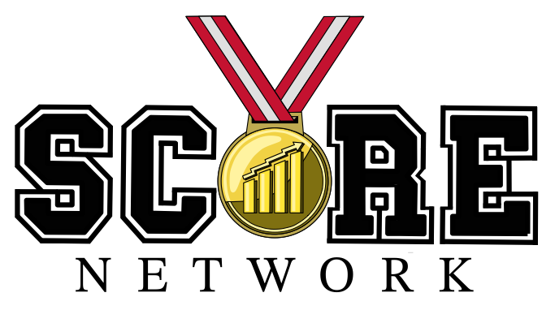
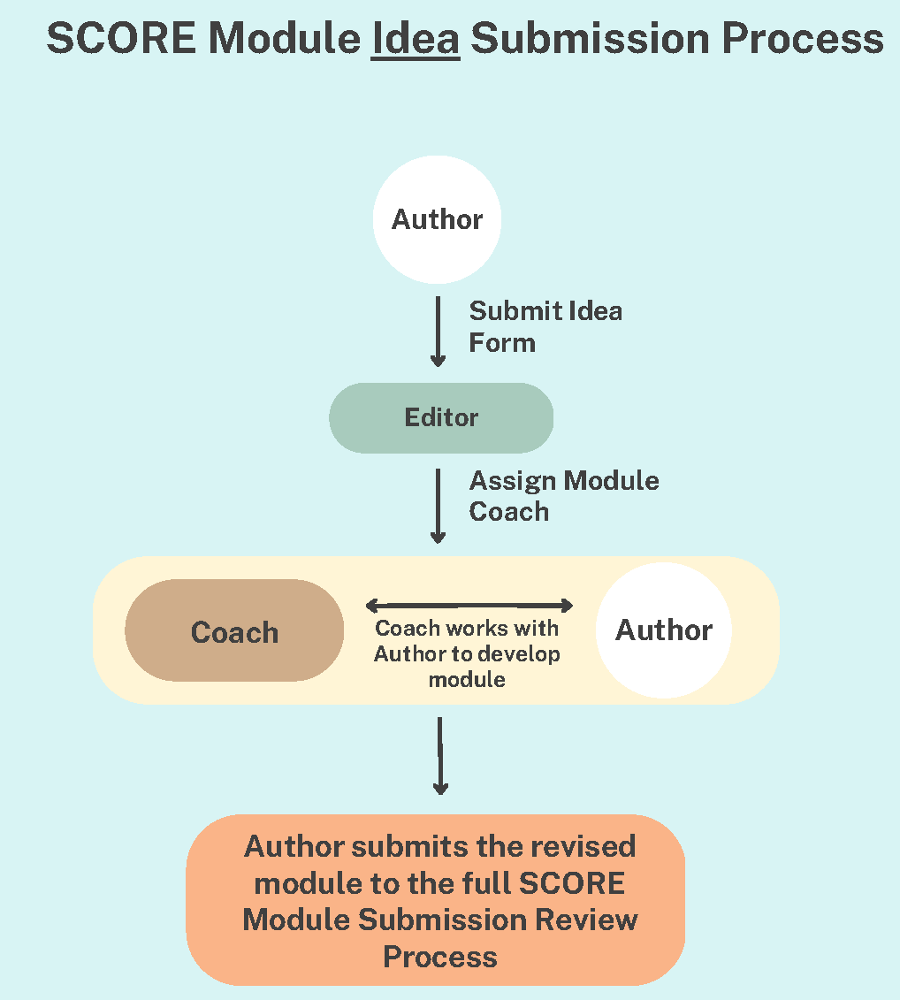
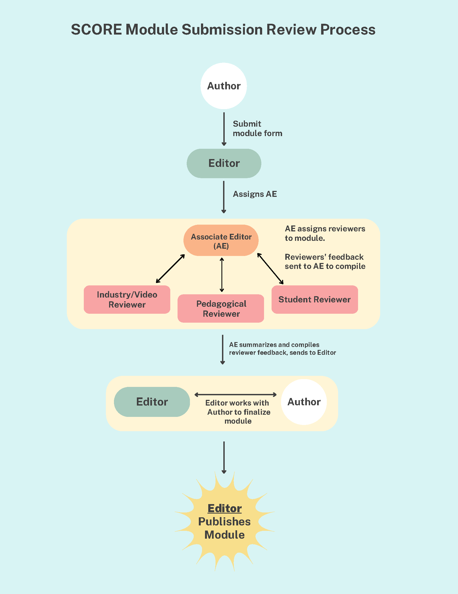

MathFest 2023 SCORE Workshop

08:00 Welcome
- Session webpage https://stamanrobin.github.io/mathfest2023_score/
- Presenters
- Nick Clark, Andrew Lee (US Military Academy)
- Robin Lock (St. Lawrence University)
- Introductions
08:05 Score (with Data) Network Overview
Goal: Create a national network for developing and disseminating Sports Content for Outreach, Research, and Education in data science and statistics.
Description: This four-year collaborative effort will create a network of educators and 50+ partners from sports teams and industry experts across the country to develop authentic curricular modules to introduce data science and statistics topics via sports applications.
Funding Acknowledgement: NSF Award #2142705. Building a sustainable national network for developing and disseminating Sports Content for Outreach, Research, and Education in data science.
Team: The 2023 Roster
-
- Main page to get access to modules, submit your own, and contact the team.
- Data Github repository
- Curates interesting datasets across a variety of sports for use in statistics and data science education. Searchble by sport or statistical topic.
Social Media
08:15 Example SCORE module
Module Overview
- Required Elements
- Motivating sports question(s)
- Data (with documentation)
- Statistics/Data Science learning goals
- Methods/topics needed to address the question(s)
- Activities/Exercises/Assessments
- Wrap-up
- Optional Elements
- Motivating video
- ISLE activity
- Sample (editable) activity handouts
- Background material on stat/data science topics
- Sample assessment items
- Instructor notes and/or solutions
- Required Elements
Details available in the Module Author Handbook
Ironman module
Module is available on ISLE
A few things to consider while working on it
- How would you use this with your students?
- What other info would you like as part of the module?
- What would you modify to fit your teaching style?
08:25 More sample modules
Break into groups based on interest
- Interactive ISLE Based
- Stolen Bases (ISLE): Testing for Normality
- Marathon (ISLE): Modeling random occurrence (using Exponential distribution)
- Unbreakable Records in Baseball: Bernoulli trial, Binomial Experiments, and Chi-Square tests
- Predicting NHL Shooting Percentages:Exploratory Data Analysis and Simple Linear Regression
- In-progress modules
- Lacrosse: PLL vs NLL: Difference in means
- League of Legends: Outlier detection
- PGA: Correlations
- No/low tech version
- Statistical Software required (e.g., Minitab, SPSS, R, etc.)
- NCAA Div I Softball: Joining/Merging Data Tables
- dplyr based (tech - “Using R” or low tech - “sketch by hand”)
- SQL (sqlite or duckdb) also available
- Feedback from groups?
- Features you like
- Suggestions for improvements
- Ideas for other module topics?
09:00 Your Possible Roles in the SCORE Network
Use data from the data repository
Class activity
Student projects
Sports Analytics Club
Submit a dataset to the data repository
- Good outlet for a student project
-
- Have a coach assigned to help develop the module

- Coaches are members of the SCORE Network who have extensive experience developing and review modules and can shephard creators through the process of going from ideal to module.
Submit a full module for review and publication

Do a pedagogical review for a proposed module
Organize student reviews for proposed modules
- Good activity for a Sports Analytics Club
Other ways to involve students
- St. Lawrence University approach (SCORE Seminiar)
- 0.25 unit course: approximately 2 - 4 students per faculty member, 1 - 2 hour load per week (for students)
- Use GitHub to store “in progress” (but usable) modules until they are ready to be submitted.
- Summer research students to polish existing and create new content.
- St. Lawrence University approach (SCORE Seminiar)
09:15 Wrap-up
Want to see more about SCORE?
-
SCORE with Data: Sports Content for Outreach, Research, And Education Invited Poster (August 6)
SCORE Seminar: Undergraduates Producing Sports-related Educational Modules Contributred paper (August 7)
Sports, statistics, and science - such synergy! Using sports to support student success in statistics Contributed paper (August 9)
Carnegie Mellon Sports Analytics Conference November 10-11, 2023